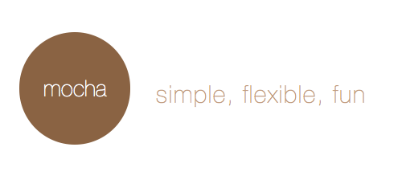
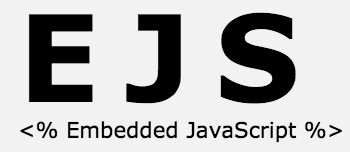

Javascript
Um curso rápido
Criado por Diego RamosEmenta
- Linguagem
- Características
- Tipos Básicos
- Funções
- Estrutura de dados
- Assincronismo
- strict mode
- Bugs, errors, exceções
- HTTP
- callbacks
- promises
Ementa ( Continuação )
- HTML 5
- Inputs
- password
- tel
- url
- number
- range
- date, datetime, datetime-local, month, week, time
- search
- color
Ementa ( Continuação )
- CSS 3
- Animations
- JS para mobile
- Frameworks/plataformas
- Ferramentas
- Testes
- Template
- Debug
Características
- Tipificação dinâmica e fraca (loose typing)
- Objetos dinâmicos
- Funções de 1a. classe
- Escopo e hoisting
- Orientada a objetos (utilizando protótipos)
Tipificação dinâmica e fraca("loose typing")
Tipos são associados com valores, não com variáveis:
var _idade = 10;
typeof _idade
~> "number"
_idade = '10';
typeof _idade
~> "string"
Objetos dinâmicos
Objetos são totalmente mutáveis, entensíveis :
var _company = {'name':'Bematech S/A', 'site':'http://bematech.com.br/'};
_company;
~> Object {name: "Bematech S/A", site: "http://bematech.com.br/"}
_company.affiliates = ['Rio de Janeiro', 'Curitiba'];
_company;
~> Object {name: "Bematech S/A", site: "http://bematech.com.br/", affiliates: Array[2]}
Durante o curso iremos ver que praticamente tudo em Javascript são objetos.
Funções de 1a. classe
Como uma linguagem funcional que javascript é as funções são tratadas como de 1a. classe.
Podemos passar funções por parâmetros ou valores de entradas para outras funções, retornar funções como retorno de funções, resumindo uma função é tratada como um tipo básico.
var _digaOla = function(){ console.log('Olá!'); }
var _outraFuncao = function(_param) { _param(); }
_outraFuncao(_digaOla);
~> Olá!
Escopo e hoisting
Em Javascript temos dois tipos de escopo função e global porém somente funções geram escopo.
- Variável declarada dentro de função, com "var", é local
- Variável declarada dentro de função, sem "var", é global
- Função declarada dentro de função é local
- Variáveis declaradas dentro de bloco if, while, for etc não são locais ao bloco, e sim `a função.
Escopo de função
var _nome = 'Fulano';
if(true) {
var _nome = 'Ciclano';
console.log('_nome: ' + _nome);
~> _nome: Ciclano
}
console.log('_nome: ' + _nome);
~> _nome: Ciclano
Continuação sobre escopo de função
Isolando o escopo com IIFE, para termos o resultado esperado.
var _nome = 'Fulano';
if(true) {
(function() {
var _nome = 'Ciclano';
console.log('_nome: ' + _nome);
})();
~> _nome: Ciclano
}
console.log('_nome: ' + _nome);
~> _nome: Fulano
Escopo global
Variáveis globais são sempre penduradas em window. Uma boa prática de programação é evitar ao máximo "sujar" o escopo global.
Entre os mais fatais problemas com escopos globais é você ter a "sorte" de sobreescrever algum lib que você esteja usando no seu projeto. =(
var _nome = 'Fulano';
if(true) {
(function() {
var _nome = 'Ciclano';
console.log('_nome: ' + _nome);
})();
~> _nome: Ciclano
}
console.log('_nome: ' + _nome);
~> _nome: Fulano
"Variable Hoisting"
Toda vez que uma variável é criada ela é içada para o topo de seu escopo, mesmo ela sendo inicializada com algum valor quando ela é içada ela vai sem valor(undefined)
try {
console.log(nome);
} catch (e) {
console.error('A variável `nome` não foi definida.')
}
~> A variável `nome` não foi definida.
Continuação de "variable hoisting"
try {
console.log(nome);
var nome = 'Fulano';
} catch (e) {
console.error('A variável `nome` não foi definida.')
}
~> undefined
Conseguiu ver o hoisting ?
"Function Hoisting"
O hoisting com funções ocorrem de maneira diferente, todo o corpo da função é içado não apenas o nome
hey();
function hey() {
console.log('Hey!')
}
~> Hey!
Orientada a objetos (utilizando protótipos)
O Javascript não tem classes, mas podemos objetos podem conter outros objetos. Podemos criar construtores para fazermos o que as classes fazem, a herança em javascript é feita com protótipos ( iremos ver mais a frente ).
Um simples objeto:
var _meuObjeto = {
dados: [],
funcao: function() { },
campo: ''
};
Objetos serão melhores explorados mais a frente.
Tipos Básicos
Os tipos primitivos do Javascript são:
- Boolean
- Number
- String
- Null
- Undefined
Todos os tipos primitivos - com exceção de null e undefined - são tratados como objetos.
Boolean
true ou false.
var _resposta = (1 < 2);
console.log(_resposta);
~> true
typeof _resposta; //checando o tipo
~> "boolean"

Number
Valores numéricos inteiros ou de ponto flutuante.
var _idade = 12;
var _custo = 10.5;
typeof _idade;
~> "number"
typeof _custo;
~> "number"
String
Caracteres entre aspas simples ou duplas.
var _nome = 'Ciclano';
typeof _nome;
~> "string"
Null
Tipo primitivo com um único valor: null. É usado para representar ausência de um valor de objeto.
Null é um valor falsey, ou seja, é convertido para false quando forçado para booleano.
!null === true;
~> true
null == true;
~> false
Undefined
Tipo primitivo com um único valor: undefined. É usado para representar valor não inicializado.
Undefined é um valor falsey, ou seja, é convertido para false quando forçado para booleano.
var _obj = {'nome':'Fulano'};
console.log(_obj.sobreNome);
~> undefined
undefined == false;
~> false
!undefined === true;
~> true
Funções
Funções são objetos com a propriedade interna [[Call]], esta indica que um objeto pode ser executado. É esta propriedade que o operador typeof verifica.
Vamos ver os seguintes tópicos abaixo:
- Declarações versus expressões
- Funções como valores
- Parâmetros
Declarações versus expressões
Há duas formas literais para as funções. A primeira é a declaração de função, que começa com a palavra-chave function mais o nome da função:
function soma(n1, n2) {
return n1 + n2;
}
soma(1, 3);
~> 4
Declarações versus expressões
A segunda forma é a expressão de função, que não exige um nome após a palavra-chave function, ou seja, esta fução é considerada anônima:
var soma = function (n1, n2) {
return n1 + n2;
}
soma(1, 3);
~> 4
Funções como valores
Como já dito anteriormente, Javascript tem funções de primeira classe, funções como valores aplica justamente isso. Você pode usar uma função como usaria qualquer outro objeto.
var funcao = function() {
console.log('Minha função');
};
funcao();
~> Minha função
Parâmetros
Um aspecto bem interessante de funções javascript é que podemos passar qualquer número de parâmetros para qualquer função sem causar erros. Isso é possível porque os parâmetros são armazenados em uma estrutura semelhante a um array chamada arguments.
function adiciona() {
var _soma = 0,
_parametros = arguments || [];
console.log(_parametros.length + ' parâmetros recebidos ');
for(var i = 0, len = _parametros.length; i < len; i++)
_soma += _parametros[i];
return _soma;
}
adiciona(9,0,30,40,555,1);
~> 6 parâmetros recebidos
~> 635
Estrutura de dados
- Arrays
- Objetos
Arrays
Arrays são listas de valores indexada por zero.
Existem basicamente duas maneiras de criar arrays em Javascript:
- var _dados = [];
- var _dados = new Array();
Arrays - Continuação
var _dados = [];
O código acima cria um objeto com a propriedade length, a qual é exclusiva de Arrays.
Arrays - Continuação
var _dados = new Array();
O código acima cria um objeto com a propriedade length, a qual é exclusiva de Arrays.
Arrays - Continuação

Arrays - Continuação
Afinal qual a diferença em usar um e outro modo ?
Usar a maneira literal e o construtor não existem muita diferenças entre as duas maneiras, um ponto interessante a ser levantado é uma otimização específica no Chrome quando usamos o construtor.
Existem algumas nuances sobre Arrays que veremos mais a frente em bugs/pegadinhas.
Objetos
Objetos são usados constantemente durante o desenvolvimento com JS. Ele nos permite representar o mundo real.
Um objeto tem propriedades associadas a ele, uma propriedade é uma variável associada ao objeto.
Objetos - Continuação
As propriedades podem ser acessadas por ponto ou conchetes:
var empresa = {'nome':'Bematech S/A', 'site':'http://bematech.com.br/'}
empresa.nome
~> Bematech S/A
empresa['nome']
~> Bematech S/A
Objetos - Continuação
Os colchetes podem ser usados para acessar campos dinamicamente:
var empresa = {'nome':'Bematech S/A', 'site':'http://bematech.com.br/'}
var campo = 'nome'
empresa[campo]
~> Bematech S/A
Assincronismo
Acredito que esse é um dos pontos principais da linguagem. O Javascript roda em uma única thread, por isso é preciso evitar ao máximo que um código Javascript bloqueie a thread.
Por isso, operações demoradas como requisições HTTP e acesso de disco ou a um banco de dados normalmente são executadas de maneira assíncrona.
Assincronismo - Continuação
Um ponto importante a ser dito é que o código Javascript sempre é processado por uma única thread, mas isso não quer dizer que o engine da linguagem e sua aplicação só usem uma thread.
Um exemplo seria, uma aplicação JS solicitar um acesso a banco de dados, pode-se sem problemas usar outra thread para esse acesso. Mas o código que solicita o acesso e callback que trata o resultado executam na thread única dedicada ao código JS.
Essa thread única é rodada em um event loop, esse assunto pode render bastante material por si só, um resumo está nesse link.
Stric mode (ou onde os "sobrinhos" não tem vez )
Neste modo o Javascript roda em um modo mais "rigoroso", neste modo a engine lança erros antes silenciados, efetua diversas verificações para que possam evitar bugs futuros e até mesmo nos probibe o uso de certas partes da linguagem consideradas problemáticas.
O strict mode é largamente utilizado em uma infinidade e códigos desde bibliotecas `a frameworks, eles nos força a escrever uma código melhor e nos ajuda a pegar bugs mais rapidamente.
A seguir vamos ver maneiras de ativar o modo strict .
Stric mode - Habilitando a nível de arquivo
Uma forma é a nível de arquivo, apenas colocando a string "use strict;" ou "use strict;"
Nenhum código pode ser colocado antes da declaração (apenas whitespace e comentários são permitidos, do contrário o modo não é ativado).
// código "strict"
"use strict";
var _pessoaDeBem = "Olá!";
// código "não strict"
var _flamenguista = "Tiro, porrada e bomba!";
"use strict";
Stric mode - Habilitando a nível de função
Você pode querer que apenas uma função rode em modo strict e todo código externo a ela rode normalmente.
function saudacao() {
"use strict";
var _saudacao = 'Olá!';
with (_saudacao) { console.log(_saudacao); } //Gera erro pois with não é permitido em modo strict :)
}
function saudacaoDeSobrinho() {
var _saudacao = 'E ae meRmão!';
with (_saudacao) { console.log(_saudacao); }
}
Strict mode - Continuação
Ok, ok...mas o que muda ?
- Remoção do with
- Declaração implícita de variáveis globais ( variável sem var )
- Restrição de nomes ( palavras reservadas )
- Parâmetros e propriedades duplicadas
"Bugs", erros, exceções
Nessa parte veremos algumas coisas estranhas no design da linguagem, tratamento e handling de exceções.
Arrays - usar construtor ou literal ?
Essa parte gera muita dúvida tem uma coisa interessante a ser vista quando usamos o construtor do Array.
var _data = []; //Isso cria um array vazio
var _arr = new Array(); // Isso cria um array vazio
var _arrInit = new Array(8); // Isso cria um array com 8 posições undefined
var _arrWithValue = new Array(1, 2); // Isso cria um array com duas posições já setadas
Isso pode gerar uma pequena confusão, por isso o uso da declaração literal é mais usada.

isfinite null is true
Temos uma função nativa para verificar se um número é finito que é a isfinite, abaixo alguns usos dela:
isFinite(42); // true
isFinite(1/0); // false
isFinite(0/0); // NaN is not finite -> false
isFinite('42'); // true
isFinite('hi'); // false
isFinite(); // false
isFinite(undefined); // false
isFinite(null); // true
null is true?! oO
Type casting de boolean
'true' == true // returns false

Capturando exceções
Nada novo por aqui, usamos o try catch:
try {
throw new Error('Erro!');
} catch(e) {
console.log('Erro: ' + e.message);
}
Tipos de erros
Oficialmente ( pode-se criar customizadas ) temos os seguintes tipos de erros:
- EvalError: Usado quando a função eval() é usada incorretamente
- RangeError: Usado quando uma variável numérica exced uma faixa de valores permitida
- ReferenceError: Usado quando é feita uma referência inválida `a uma objeto
- SyntaxError: Usado quando um erro de sintaxe é encontrado
- URIError: Usada quando as funções encodeURI() e decodeURI() são usadas de uma maneira incorreta.
Customizando erros
Temos o construtor Error:
var launchCustomError = function() {
var error = new Error('Babou!');
error.name = 'CustomError';
throw error;
};
try {
launchCustomError();
}
catch(e) {
console.log(e.name + ' - ' + e.message); //CustomError - Babou!
}
Quando não definimos o name, o default é "Error".
Ajax
Ajax é o que dá vida as aplicações web / mobile. O conceito de ajax é amplamente divulgado e simples, em resumo são requisições a recursos externos `a aplicação.
Um exemplo de ajax com javascript puro seria:
var xhr = new XMLHttpRequest();
xhr.open("GET", "https://api.github.com/users/rdiego26/repos", true);
xhr.onload = function (e) {
if (xhr.readyState === 4) {
if (xhr.status === 200) {
console.log(xhr.responseText);
} else {
console.error(xhr.statusText);
}
}
};
xhr.onerror = function (e) {
console.error(xhr.statusText);
};
xhr.send();
Ajax - Continuação
Existem diversas bibliotecas javascript que facilitam (deixam menos verboso) o uso de ajax, alguns exemplos:
Um site interessante para busca de bibliotecas especializadas é o Micro.js
Callbacks
Callbacks nada mais são do que funções onde são tratado os eventos de sucesso e erro de um processamento assíncrono.
$.ajax({
type: 'POST',
url: '/project',
data: { name: 'Super Volcano Lair' },
dataType: 'json',
success: function(data){
// Do some nice stuff here
},
error: function(xhr, type){
alert('Y U NO WORK?')
}
});
Promises
Promise é uma maneira onde se evitam diversos problemas de design de requisições ( um bastante difundido é o "callback hell" ) é uma outra maneira de se fazer ajax, só que o código fica de uma maneira mais limpa.
Essa é uma feature ainda experimental da especificação ECMAScript 6.
var promessa = new Promise(function(resolve, reject) {
// Do the usual XHR stuff
var req = new XMLHttpRequest();
req.open('GET', 'https://api.github.com/users/rdiego26/repos');
req.onload = function() {
// This is called even on 404 etc
// so check the status
if (req.status == 200) {
// Resolve the promise with the response text
resolve(req.response);
}
else {
// Otherwise reject with the status text
// which will hopefully be a meaningful error
reject(Error(req.statusText));
}
};
// Handle network errors
req.onerror = function() {
reject(Error("Network Error"));
};
// Make the request
req.send();
});
promessa.then(function(response) {
console.log('Success!' + response);
}, function(error){
console.log('Error! ' + error );
});
HTML 5
A nova versão do HTML 5 traz muitas novidades e melhorias, entre as mais importantes os tipos de inputs.
Veremos alguns tipos mais usados e os novos.
Password
O nome já diz, esse tipo mascara o valor digitado.
As tags foram removidas para a não renderização.
label for="senha" Senha
input id="senha" name="senha" type="password" required="true" maxlength="10" pattern="[A-Za-z]{10}
/label
Esse input foi muito solicitado pela comunidade, com ele podemos validar um e-mail sem javascript e sem o uso do pattern.
label for="email" Email
input id="email" name="email" type="email" autocomplete="on" required="true" maxlength="10"
/label
Tel
Esse input foi criado para trabalhar com telefones, porém, como existem diversos padrões de telefones não há uma validação, apenas através do atributo pattern.O uso dele é apenas para semântica.
label for="phone" Telefone
input id="phone" name="phone" type="tel" autocomplete="on" required="true"
/label
Url
Esse tipo valida URLs.
label for="url" URL
input id="url" name="url" type="url" autocomplete="on"
/label
Number
Esse tipo trabalha com strings que no envio serão transformados em números, o input também disponibilizará setas para incrementar e decrementar o valor do campo.
label for="num" Número
input id="num" name="num" type="number" max="30" min="2" step="2"
/label
Range
Esse tipo quanto ao valor retornado trabalha igualmente o Number mas visualmente é mostrado um slider.
label for="num" Número
input id="num" name="num" type="range" max="30" min="2" step="2"
/label
Date
Em alguns navegadores é disponibilizado um datepicker ( Chrome, Firefox ).
label for="data" Data
input id="data" name="data" type="date"
/label
Datetime / Datetime-local
Esses tipos não são suportados por todos os navegadores ainda, por isso são pouco utilizados, mas basicamente eles disponibilizam um date picker com data.
label for="data" Data
input id="data" name="data" type="datetime-local"
/label
month, week e time
Respectivamente mês, semana e tempo ( hora e data ). O suporte a esses tipos ainda está baixo, portanto não são muito usados.
label for="mes" Mês
input id="mes" name="mes" type="month"
/label
Search
Bom suporte, inclusive alguns browsers estilizando o mesmo ( lupa dentro do input ) e também tem uma boa semântica.
label for="busca" Termo
input id="busca" name="busca" type="search"
/label
Color
Ótimo suporte, implementa um colorpicker, o valor da cor retornado é em hexadecimal.
label for="cor" Cor
input id="cor" name="cor" type="color"
/label
Animações com CSS
As animações com CSS disponibilizam maneiras de animar mudanças de valor CSS de elementos.

Animações com CSS
Alguns pontos interessantes a serem vistos:
- São mais fáceis de usar para animações simples, você pode criar mesmo sem saber Javascript.
- As animações funcionam muito bem mesmo sob uma carga considerável do sistema. O motor de renderização pode usar frame-skipping e outras técnicas para manter o desempenho o melhor possível.
- Deixar que o navegador controle a animação permite otimizações em tempo de execução, como ajuste da frequência de atualização dos frames.
Animações com CSS
A configuração de uma animação consistem nas seguintes sub-propriedades de animation :animation-delay: Configura o delay entre o tempo de carregamento e o início da animação animation-direction: Indica se a animação irá recomeçar em uma direção alternativa ou não a cada rodada de execução animation-duration: Configura a duração do tempo que deve ter uma animação para completar um ciclo. animation-iteration-count: Configura o número de vezes que a animação irá se repetir; você pode definir infinite para a animação repetir-se indefinitamente. animation-name: O nome definido aqui, é selecionado pela propriedade @keyframes . animation-play-state: Essa propriedade serve para informar se a animação está rodando ou pausada. animation-timing-function: Configura como as transições da animação irão ocorrer, através de keyframes. animation-fill-mode: Configura que valores são aplicados pela animação antes e depois de se executar.
Exemplos de animações com CSS - Deslizando texto na tela
h1 {
animation-duration: 3s;
animation-name: slidein;
}
@keyframes slidein {
from {
margin-left: 100%;
width: 300%
}
to {
margin-left: 0%;
width: 100%;
}
}
Exemplo on line
Exemplos de animações com CSS - Deslizando mais rápido texto na tela
Vamos colocar mais um efeito na animação
75% {
font-size: 300%;
margin-left: 25%;
width: 150%;
}
Exemplo on line
Exemplos de animações com CSS - Looping infinito
h1 {
animation-duration: 3s;
animation-name: slidein;
animation-iteration-count: infinite;
}
Exemplo on line
Apache Cordova
Existe uma grande confusão quanto ao Cordova, ele não é um framework e sim uma plataforma para nossos builds. Ele é um set de APIs para acesso nativo as funcionalidades dos dispositivos.
O cordova internamente é utilizado por diversos frameworks de mercado, como phonegap e ionic.
Com o Apache Cordova podemos fazer diversas coisas entre:
- Gerenciar as plataformas ( Android, IOS ... ) de um projeto
- Adicionar plugins de terceiros ou oficiais para os mais diversos fins
- Uso de sua API para acessar recursos nativos do aparelho

Apache Cordova - Instalação
Você precisa apenas do nodeJS instalado com isso você pode instalar o mesmo com o comando:
npm install -g cordova
O "-g" é para instalar o cordova de maneira global em sua máquina.
Apache Cordova - Criando um projeto
Para criar um projeto no cordova use o comando abaixo:
$ cordova create hello br.com.bematech.hello HelloWorld
Onde:
- hello: Nome do diretório que será gerado para conter o projeto
- br.com.bematech.hello: Identificador do projeto, "pacote"
- HelloWorld: Nome com o qual a aplicação será instalado, este é opcional
Apache Cordova - Gerenciando plataformas
Para o uso das plataformas você deve ter o ambiente da mesma instalado ( normalmente o SDK da plataforma ), feito isso, para adicionar a plataforma ao projeto:
$ cd pasta-projeto
$ cordova platform add NOME-PLATAFORMA
$ cordova platforms ls //lista plataformas utilizadas no projeto
Onde:
- NOME-PLATAFORMA: pode ser ios, firefoxos, android, blackberry10, wp8, windows ...
Apache Cordova - Build
O processo de build é muito simples:
$ cd pasta-projeto
$ cordova build // fará build para todas plataformas instaladas
$ cordova build android // limitando o build
Apache Cordova - Testando o projeto no emulador
Para rodarmos o projeto criado no emulador:
$ cd pasta-projeto
$ cordova emulate android //Invoca o emulador do android e executa o app
Apache Cordova - Testando o projeto no device
Para rodarmos o projeto criado diretamente no device:
$ cd pasta-projeto
$ cordova run android //Não esqueça de colocar o device em modo debug
Apache Cordova - Adicionando plugins ao projeto
Podemos adicionar plugins diretamente do repositório do Cordova:
$ cd pasta-projeto
$ cordova plugin search bar code
$ cordova plugin add com.phonegap.plugins.barcodescanner //Adicionando ao projeto
$ cordova plugin ls //Lista plugins instalados no projeto
Phonegap
O phonegap inicialmente foi criado e mantido até outubro de 2012 pela Apache Software Foundation sob o nome de Apache Cordova quando foi liberado sob a licença Apache 2.
Tem uma ótima comunidade, diversos plugins de alta qualidade ( outros nem tanto ) e sua utilização é bem simples.
Phonegap - Instalação
Você precisa apenas do nodeJS instalado com isso você pode instalar o mesmo com o comando:
npm install -g phonegap
O "-g" é para instalar o phonegap de maneira global em sua máquina.
Phonegap - Criando um projeto
Para criar um projeto no phonegap use o comando abaixo:
$ phonegap create my-app
$ cd my-app
O comando acima cria um projeto chamado "Hello World" com o id com.phonegap.helloworld .
Phonegap - Gerenciando plataformas
Intermanente o cordova é usado, basicamente é um wrapper, muitos devs usam diretamente o cordova para tal mas para conhecimento, segue abaixo:
$ phonegap platform add NOME-PLATAFORMA
Onde:
- NOME-PLATAFORMA: pode ser ios, firefoxos, android, blackberry10, wp8, windows ...
Phonegap - Build
O processo de build é muito simples:
$ cd pasta-projeto
$ phonegap build // fará build para todas plataformas instaladas
$ phonegap build android // limitando o build
Phonegap - Testando o projeto no emulador
Para rodarmos o projeto criado no emulador:
$ cd pasta-projeto
$ phonegap emulate android //Invoca o emulador do android e executa o app
Apache Cordova - Testando o projeto no device
Para rodarmos o projeto criado diretamente no device:
$ cd pasta-projeto
$ cordova run android //Não esqueça de colocar o device em modo debug
Ionic
O inonic revolucionou de maneira significativa o desenvolvimento híbrido pois já trouxe alguns elementos do HTML 5, um ótimo exemplo são os elementos javascript.
Ele utiliza o AngularJS como framework para o JS, isso já lhe força a usar as convenções do framework mas lógico que existem muitas vantagens nisso também, como o MVC, por exemplo.
Ele é focado em performance, não usa jQuery, manipulação mínima de DOM entre outros.

Ionic - Instalação
Você precisa apenas do nodeJS e o cordova instalado com isso você pode instalar o mesmo com o comando:
npm install -g cordova ionic
O "-g" é para instalar o cordova e o ionic de maneira global em sua máquina.
Ionic - Criando um projeto
O ionic disponibiliza diversos templates de projeto, alguns dos mais usados são blank, tabs e sidemenu :
$ ionic start myApp sidemenu
Ionic - Gerenciando plataformas
Para o uso das plataformas você deve ter o ambiente da mesma instalado ( normalmente o SDK da plataforma ), feito isso, para adicionar a plataforma ao projeto:
$ cd pasta-projeto
$ ionic platform add NOME-PLATAFORMA
$ ionic platforms ls //lista plataformas utilizadas no projeto
Onde:
- NOME-PLATAFORMA: pode ser ios, firefoxos, android, blackberry10, wp8, windows ...
Ionic - Build
O processo de build é muito simples:
$ cd pasta-projeto
$ ionic build // fará build para todas plataformas instaladas
$ ionic build android // limitando o build
Ionic - Testando o projeto no emulador
Para rodarmos o projeto criado no emulador:
$ cd pasta-projeto
$ ionic emulate android //Invoca o emulador do android e executa o app
Ionic - Testando o projeto no device
Para rodarmos o projeto criado diretamente no device:
$ cd pasta-projeto
$ ionic run android //Não esqueça de colocar o device em modo debug
Testes
Sabemos que testes são uma etapa importante e constante de nosso trabalho, separei dois frameworks de testes para vermos:
Mocha
Projeto open source que visa tornar os testes simples de serem executados e criados. Ele pode ser usado com o NodeJS e /ou browser
Você pode ter testes síncronos e assíncronos.
Mocha - Instalação
Ele utiliza como convenção pasta test como container dos testes mas você pode indicar outro path / arquivo sem problemas no momento de execução.
Para instalar o mesmo, você pode usar o npm sem problemas:
$ npm install -g mocha
1, 2, 3...Mocha!
$ $EDITOR test/test.js
var assert = require("assert");
describe('Array', function(){
describe('Comparing two arrays', function() {
it('should return false when values is not equals', function() {
var _arr1 = [1, 2, 3],
_arr2 = [2, 2];
assert.equal(true, _arr1[1] === _arr2[1] );
});
});
});
$ mocha //roda testes
✔ 1 test complete (6ms)

Mocha - Testes assíncronos
$ $EDITOR test/test.js
describe('Github API', function() {
describe('#getRepos()', function() {
it('should list repos without error', function(done) {
var _gitHub = new GitHubAPI();
_github.getRepos(function(err) {
if (err) throw err;
done();
});
});
});
});
$ mocha // roda os testes
✔ 1 test complete (56ms)
Mocha - Hooks
Hooks são métodos onde você pode setar pré-condições e resetar seus testes.
describe('hooks', function() {
before(function() {
// runs before all tests in this block
})
after(function(){
// runs after all tests in this block
})
beforeEach(function(){
// runs before each test in this block
})
afterEach(function(){
// runs after each test in this block
})
// test cases
})
QUnit
O QUnit é uma lib criada pelo pessoal do Jquery, os testes rodam direto no browser.
O projeto atualmente não tem tido muita manutenção mas é bem estável.
QUnit - Let's go!
Para testes com o QUnit você irá precisar criar um HTML e CSS bem básicos, incluir seus JSs e incluir a lib em si.
ExemploTemplates
Ferramentas de template nos ajudam a montar views de maneira organizada, concisa e dinâmica.
Veremos algumas ferramentas que nos ajudam nesse processo.
Handlebars
Lhe ajuda a ter layouts semânticos sem estresse. Utiliza {{ }} como operador.
Handlebars - Análise de exemplo
Followers do githubEmbedded Javascript
Se assemelha a sintaxe de um JSP. Código entre <% %> é executado e entre <%= %> o resultado é adicionado ao HTML.
EJS - Análise de exemplo
Followers do githubDebug ( is on the table )
E chegamos a uma parte muito importante: debugar nosso código!
Debugar nos ajudar em muitas coisas desde criar testes realmente efetivos a consequentemente cobrir todas situações de negócio.
O browser é seu amigo!
Os browsers sempre disponibilizaram o "console do desenvolvedor" e este vem sendo sempre aprimorado conforme a web cresce e toma força.
Escolhi o console do Chrome pelo fato de ser o que eu mais uso. :)
Google Chrome
O developer tools do Chrome se divide nas seguintes abas:
Elements: Disponibiliza todo o DOM para manipulação em tempo real.
Network: Informações sobre todos recursos usados para renderizar a página.
Sources: Organiza os domínios envolvidos no carregamento da página.
Timeline: Permite a gravação de diversos dados para análise de performance. Ideal para encontrar gargalos que só acontecem "em produção".
Profiles: Profiling para o JS. Isso valida se otimizações de código foram de fato efetivas.
Resources: Disponibiliza de maneira organizada e objetiva dados sobre sessão, imagens, fontes, scripts, cookies, etc.
Audits: Ferramenta incrível que pode lhe dar diversas dicas sobre melhoria pensando em performance e qualidade de código de sua página.
Console: Playground! :)
THE END
Questions or let's code ? :)
Links Úteis
- Syntax Validor ( inclusive para strict mode )
- Reveal JS ( Utilizado para a apresentação )
- Incidente com a Amazon por não usar strict mode
- strict mode em mais detalhes por Dmitry Soshnikov
- Promises (HTML 5 Rocks)
- Estrutura Semântica HTML 5
- Usando animações
- Link do curso
- Template Chooser
- EJS
- Google Developer Tools Overview